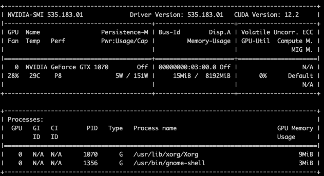

- Sat 01 November 2025
- GPU, C
It's been quite some time since my last blog post. Work and life have kept me busy, and the rise of GenAI has made things especially hectic at work. Longing for a break from my routine, I decided to try something different and started tinkering with a free gaming PC someone gave me.
The catch? It had display issues. When I connected the HDMI output to my monitor, I got no signal—which explains why it was free! I'm not much of a gamer, but I was curious to see if I could bring the GPU back to life. I managed to get Ubuntu installed and connect to it remotely via SSH. Since the machine sports an NVIDIA logo, I'm guessing it has an NVIDIA GPU inside.
My goal isn't just to fix the display; it's to finally learn how NVIDIA GPUs work. I've used GPUs blindly within frameworks like PyTorch, never truly understanding their internal mechanics. While diving into CUDA (Compute Unified Device Architecture) programming isn't strictly necessary for learning deep learning or GenAI models, I have an itch I need to scratch!
Unveiling the Hardware
After successfully getting all the necessary drivers and prerequisites installed on the server, a quick run of nvidia-smi gave me the crucial details:

The output confirms I have a NVIDIA GeForce GTX 1070.
After some research, I found that the GTX 1070 was launched back in June 2016 as part of NVIDIA’s Pascal architecture. While it's a few years old now, it’s likely overkill for my goal of just learning how GPUs work internally and how to program simple computations.
The Architecture: Parallel Power
The GTX 1070 features 1920 CUDA cores (shading units or streaming processors), which function as tiny, parallel processing engines designed to crunch numbers and render graphics. These cores are organized into 15 Streaming Multiprocessors (SMs), enabling the card to handle thousands of threads simultaneously. In other words, 1920 CUDA cores are organized as 15 SMs of 128 CUDA cores each.
This high degree of parallelism (often called data parallelism) is precisely what makes GPUs so powerful for numerical tasks like machine learning workloads. For context, a recent mid-range card like the RTX 5060 boasts an astounding 3840 cores, but for my learning needs, 1920 is more than sufficient!
Memory and Bandwidth
The card is equipped with 8GB of GDDR5 memory. While this isn't enough to run any large, useful Large Language Models (LLMs), it’s plenty for running smaller deep learning models, such as classification or simple transformer architectures.
It offers a decent memory bandwidth of 256 GB/s. Memory bandwidth is a critical factor, as it determines how quickly data can move between the GPU's memory and its processing cores—higher is always better. The newer RTX 5060, for comparison, has a bandwidth of 448 GB/s.
Furthermore, the memory technology in the GTX 1070, GDDR5, is much older than the GDDR7 found in more recent cards like the RTX 5060. Newer memory generations offer significantly faster data rates per pin. For example, GDDR5 typically runs at about 5–8 Gbps, whereas GDDR7 can achieve speeds up to 32 Gbps.
Compute
The core of any GPU compute task, including our low-level CUDA kernels (functions that run on the core), relies on Single Precision (FP32) performance. IN other words, how fast they crunch floating point numbers. The newer-generation card (RTX 5060) offers a staggering 19.18 TFLOPS of FP32 compute power, nearly three times the capacity of my GTX 1070's 6.463 TFLOPS. For the aspiring CUDA programmer like me, GTX 1070 is still a fantastic learning platform as I really donot need that much compute for my usecases.
Tensor Cores
GTX 1070 (part of the Pascal generation) does not have Tensor Cores. Tensor cores seems to more of recent addition in RTX series. Tensor Cores are specifically designed to accelerate matrix multiplication and accumulation operations, which are the fundamental building blocks of neural networks (Deep Learning). They seem to achieve massive speed-ups by performing these operations using mixed precision (e.g., multiplying matrices in FP16/BF16 but accumulating the results in FP32 to maintain accuracy).
The lack of tensor cores is actually a benefit. I will be forced to use the standard CUDA Cores, which is the foundational skill of GPU programming. This gives me a pure, low-level starting point.
With the hardware mystery solved, my focus is entirely on the next steps: understanding the architecture and immediately launching into programming.